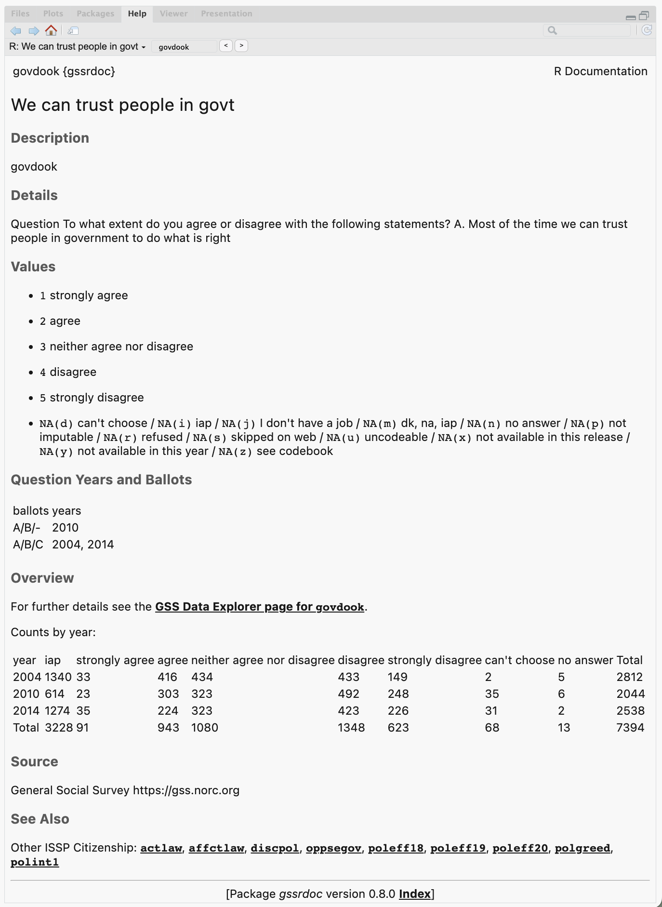

Documentation for the General Social Survey Cumulative Data (1972-2024) packaged for easy use in R. This package is a companion to the gssr package. I recommend you install both of them.
Installation
The relatively large number of variables documented in gssrdoc means it is not suitable for hosting on CRAN, the core R package repository. The same is true of the gssr package.
Install via R-Universe
My R Universe provides binary packages for gssrdoc and gssr. To install both packages, copy and paste the following code to the R console:
# Install 'gssrdoc' from 'ropensci' universe
install.packages('gssrdoc', repos =
c('https://kjhealy.r-universe.dev', 'https://cloud.r-project.org'))
# Also recommended: install 'gssr' as well
install.packages('gssr', repos =
c('https://kjhealy.r-universe.dev', 'https://cloud.r-project.org'))Because the packages have dependencies that are on CRAN, we add CRAN as well as the R Universe to the repos argument. These binary packages will install much faster than building the package from source. Plus, you can use install.packages() directly.
Install direct from GitHub
You can also install gssrdoc from GitHub with:
remotes::install_github("kjhealy/gssrdoc")Integrated Help
gssrdoc provides documentation for all GSS variables in the cumulative data file via R’s help system. You can browse variables by name in the package’s help file or type ? followed by the name of the variable at the console to get a standard R help page containing information on the variable, the values it takes, and the years and ballots it is available for. This makes it much easier to check GSS documentation while using R in an IDE such as RStudio, VSCode, or Positron. The help page for each variable links to the GSS Data Explorer page for that variable. The “See Also” section at the bottom of the help page incorporates the GSS’s own cross-referencing by module. The documentation website for the packge has a full listing of the variables and a topical index organized by survey module and the GSS’s own subject tags.

Information about the variables is also contained in the gss_doc object:
library(tibble)
library(gssrdoc)
gss_doc
#> # A tibble: 6,694 × 12
#> variable description question norc_id norc_url var_yrtab yrballot_df module_df subject_df value_labels var_type var_na_codes
#> <chr> <chr> <chr> <int> <chr> <list> <list> <list> <list> <chr> <chr> <chr>
#> 1 year GSS year for this respondent "GSS year" 1 https:/… <chr [1]> <tibble> <tibble> <tibble> "[NA(d)] do… numeric .d,.i,.j,.m…
#> 2 id Respondent id number "Respondent id number" 2 https:/… <chr [1]> <tibble> <tibble> <tibble> "" <NA> <NA>
#> 3 wrkstat labor force status "Last week were you worki… 3 https:/… <tibble> <tibble> <tibble> <tibble> "[1] workin… numeric .d,.i,.j,.m…
#> 4 hrs1 number of hours worked last week "Last week were you worki… 4 https:/… <chr [1]> <tibble> <tibble> <tibble> "[89] 89+ h… numeric .d,.i,.j,.m…
#> 5 hrs2 number of hours usually work a week "Last week were you worki… 5 https:/… <tibble> <tibble> <tibble> <tibble> "[89] 89+ h… numeric .d,.i,.j,.m…
#> 6 evwork ever work as long as one year "Last week were you worki… 6 https:/… <tibble> <tibble> <tibble> <tibble> "[1] yes / … numeric .d,.i,.j,.m…
#> 7 occ R's census occupation code (1970) "A. What kind of work do … 7 https:/… <chr [1]> <tibble> <tibble> <tibble> "[NA(d)] do… numeric .d,.i,.j,.m…
#> 8 prestige r's occupational prestige score(1970) "A. What kind of work do … 8 https:/… <tibble> <tibble> <tibble> <tibble> "[NA(d)] do… numeric .d,.i,.j,.m…
#> 9 wrkslf r self-emp or works for somebody "A. What kind of work do … 9 https:/… <tibble> <tibble> <tibble> <tibble> "[1] self-e… numeric .d,.i,.j,.m…
#> 10 wrkgovt govt or private employee "A. What kind of work do … 10 https:/… <tibble> <tibble> <tibble> <tibble> "[1] govern… numeric .d,.i,.j,.m…
#> # ℹ 6,684 more rowsOfficial GSS Documentation
The GSS Documentation Page contains links to extensive technical documentation for the survey, including Release Notes for the 1972-2024 Cumulative File and What’s New in 2024.
Further details
The package is documented at http://kjhealy.github.io/gssrdoc/. The GSS homepage is at http://gss.norc.org/. While gssrdoc package incorporates the publicly-available GSS cumulative data file, this package is not associated with or endorsed by the National Opinion Research Center or the General Social Survey.